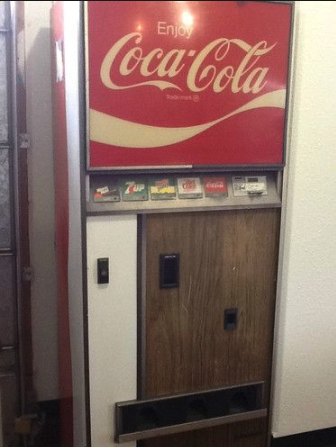
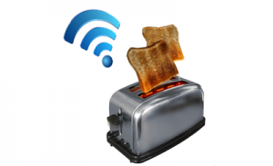

Primeros dispositivos inteligentes
Desde que existe la posibilidad de conectar un objeto a internet, se ha intentado mejorar con esta tecnología, el primer caso fue una máquina de coca cola en 1982.
Esta máquina se conectó gracias a una modificación en la Universidad Carnegie Mellon, convirtiéndose en el primer electrodoméstico inteligente.

Un tiempo más tarde, concretamente en 1990, John Romkey crea el primer dispositivo que es controlado gracias al internet, en este caso sería una tostadora.
